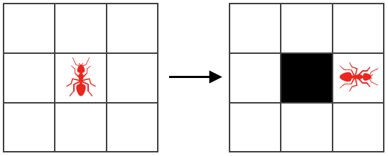
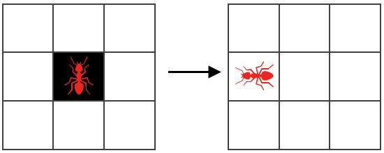
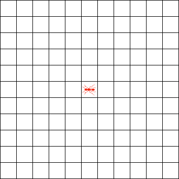
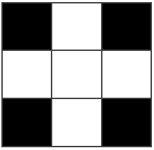
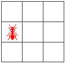

La fourmi de Langton¶
On peut consulter une présentation de la fourmi de Langton, réalisée par David Louapre sur sa chaîne Science étonnante.
Ce parcours s'appuie sur la connaissance des tableaux de tableaux et des dictionnaires.
Les éléments du module p5 qui permettent de réaliser les animations sont fournis, mais une connaissance préalable des fonctionnalités élémentaires de p5 est souhaitable. On pourra consulter la page p5 sur carnets.info
1. Le principe¶
On considère une fourmi qui se trouve sur une grille dont les cases sont soit blanches, soit noires.
La fourmi se déplace sur la grille en fonction de la couleur de la case sur laquelle elle se trouve :
- si elle se trouve sur une case blanche, elle tourne à droite et avance d'une case,
- si elle se trouve sur une case noire, elle tourne à gauche et avance d'une case,
- et dans tous les cas, la case qu'elle quitte change de couleur.


On souhaite partir d'une grille totalement blanche, avec une fourmi placée au centre, orientée vers le nord, et observer l'évolution de la grille au fur et à mesure des déplacements de la fourmi.
Voici une animation des 200 premières étapes, avec une fourmi orientée initialement vers l'est.

Exemple :

Une grille de 3 × 3 cases dont les quatre "coins" sont des cases noires et les autres cases sont blanches est représentée par le tableau :[[1, 0, 1], [0, 0, 0], [1, 0, 1]]
Question 1
On considère une grille intiale de de n × n cases blanches, où n est un entier.
Compléter la fonction grille_initiale pour qu'elle renvoie la grille de la situation initiale, et vérifier les tests proposés.
def grille_initiale(n):
'''
renvoie une grille carrée de taille n * n, ne contenant que des zéros
'''
grille = ...
return grille
assert grille_initiale(3) == [[0, 0, 0], [0, 0, 0], [0, 0, 0]]
2.2 Représentation graphique¶
Question
La grille initiale est une grille carrée de cases blanches.
Compléter la fonction dessiner_grille_vide(nb_cases, dim_case) pour qu'elle dessine la grille initiale sous la forme d'une grille de nb_cases lignes et nb_cases colonnes. Chaque case est un carré de dimension dim_case.
Cette fonction sera appelée une seule fois par la fonction setup() de p5 dans le programme principal.
def dessiner_grille_vide(nb_cases, dim_case):
'''
dessine la grille initiale : grille de nb_cases lignes et nb_cases colonnes
Chaque case est un carré de dimension dim_case.
'''
strokeWeight(1) # épaisseur du tracé
stroke(180) # couleur de tracé (gris)
fill(255) # couleur de remplissage (blanc)
for i in range(...):
for j in range(...):
square(..., ..., ...)
Test :
Exécuter les deux cellules suivantes : si la fonction dessiner_grille_vide est correcte, une grille de 9 × 9 cases doit apparaître.
from p5 import *
NB_CASES = 9 # nombre de cases du quadrillage par ligne ou colonne
DIM_CASE = 180 // NB_CASES # dimension d'une case
def setup():
createCanvas(180, 180)
dessiner_grille_vide(NB_CASES, DIM_CASE)
def draw():
pass
run()
La fourmi possède, à une étape donnée, une position (donnée par un indice de ligne et un indice de colonne) et une direction.
On choisit de représenter cette direction par un entier entre 0 et 3 :
| direction | nom | code |
|---|
→ | est | 0 ↓ | sud| 1 ← | ouest | 2 ↑ | nord| 3
Avec cette représentation, tourner à droite (d'un quart de tour) revient à ajouter 1 (modulo 4) et tourner à gauche (d'un quart de tour) revient à soustraire 1 (modulo 4).
Les données concernant la fourmi seront stockées dans un dictionnaire appelé fourmi, dont les clés et valeurs seront :
'ligne': l'indice de ligne de l'emplacement de la fourmi'colonne': l'indice de colonne de l'emplacement de la fourmi'direction': le code de la direction de la fourmi
Exemple :

Voici une fourmi située en ligne 1, colonne 0 d'une grille de 3 × 3 cases, et orientée vers le nord (code 3). Elle est représentée par le dictionnaire :{'ligne':1, 'colonne':0, 'direction':3}
Question
On considère une grille de de n × n cases, où n est un entier. Au départ la fourmi se place au centre de la grille, et elle s'oriente vers le nord.
Compléter la fonction fourmi_initiale(n) pour qu'elle renvoie le dictionnaire représentant la position et la direction de la fourmi, et vérifier les tests proposés.
def fourmi_initiale(n):
'''
renvoie le dictionnaire dont les clés sont 'ligne', 'colonne' et 'direction' pour une fourmi située
au centre d'une grille de taille n * n, orientée vers le nord
'''
return ...
assert fourmi_initiale(3) == {'ligne':1, 'colonne':1, 'direction':3}
assert fourmi_initiale(20) == {'ligne':10, 'colonne':10, 'direction':3}
assert fourmi_initiale(21) == {'ligne':10, 'colonne':10, 'direction':3}
3.2 Représentation graphique¶
Question
Les données concernant la fourmi sont stockées dans un dictionnaire appelé fourmi, dont les clés sont 'ligne', 'colonne' et 'direction'.
Compléter la fonction tracer_fourmi(fourmi, dim_case) pour qu'elle représente graphiquement la fourmi à sa position sur la grille, où chaque case est un carré de dimension dim_case.
En première approche, on pourra représenter la fourmi par un disque rouge, sans chercher à tenir compte de la direction de son futur déplacement.
Attention : l'indice de ligne renseigne sur l'ordonnée de la case et l'indice de colone sur son abscisse.
def tracer_fourmi(fourmi, dim_case):
'''
représente graphiquement la fourmi sur la grille,
constituée de cases carrées de dimension dim_case
'''
fill('red') # couleur de remplissage
noStroke() # bords non visibles
circle(..., ..., ...)
Test :
Exécuter la cellule suivante : si la fonction tracer_fourmi est correcte, une "fourmi" rouge doit apparaître au centre d'une grille de 9 × 9 cases.
NB_CASES = 9 # nombre de cases du quadrillage par ligne ou colonne
DIM_CASE = 180 // NB_CASES # dimension d'une case
fourmi = fourmi_initiale(NB_CASES)
def setup():
createCanvas(180, 180)
dessiner_grille_vide(NB_CASES, DIM_CASE)
tracer_fourmi(fourmi, DIM_CASE)
def draw():
pass
run()
4. Déplacements de la fourmi¶
La fourmi se déplace sur la grille en fonction de la couleur de la case sur laquelle elle se trouve :
- si elle se trouve sur une case blanche, elle tourne à droite et avance d'une case,
- si elle se trouve sur une case noire, elle tourne à gauche et avance d'une case.
4.1 La direction de la fourmi¶
Question
Compléter la fonction diriger_fourmi(fourmi) pour qu'elle modifie la direction de la fourmi en fonction de la couleur de la case sur laquelle elle se trouve.
Cette fonction ne renvoie rien. Elle modifie le contenu du dictionnaire fourmi.
# grille est un tableau de tableaux initialisé avec la fonction grille_initiale()
def diriger_fourmi(fourmi):
'''
fourmi est un dictionnaire, dont les clés sont 'ligne', 'colonne' et 'direction'.
diriger_fourmi modifie la direction de la fourmi en fonction de la couleur de la case sur laquelle elle se trouve.
'''
if grille[...][...] == 0: # test sur la couleur de la case courante
fourmi[...] = (fourmi[...] + 1) % 4 # changement de direction : à droite
else:
fourmi[...] = (fourmi[...] - 1) % 4 # changement de direction : à gauche
4.2 La position de la fourmi¶
Question
Compléter la fonction bouger_fourmi(fourmi) pour qu'elle modifie la position de la fourmi en fonction de sa direction.
Cette fonction ne renvoie rien. Elle modifie le contenu du dictionnaire fourmi.
def bouger_fourmi(fourmi):
'''
fourmi est un dictionnaire, dont les clés sont 'ligne', 'colonne' et 'direction'.
bouger_fourmi modifie la position de la fourmi en fonction de sa direction.
'''
if ... == 0: # direction vers l'est
... # déplacement d'une colonne vers l'est
elif ... == 1: # direction vers le sud
... # déplacement d'une ligne vers le sud
elif ... == 2: # direction vers l'ouest
... # déplacement d'une colonne vers l'ouest
else: # direction vers le nord
... # déplacement d'une ligne vers le nord
Tests :
Exécuter la cellule suivante pour passer les tests proposés.
# tests
fourmi = {'ligne':2, 'colonne':2, 'direction':3}
bouger_fourmi(fourmi)
assert fourmi == {'ligne':1, 'colonne':2, 'direction':3}
fourmi = {'ligne':2, 'colonne':2, 'direction':2}
bouger_fourmi(fourmi)
assert fourmi == {'ligne':2, 'colonne':1, 'direction':2}
fourmi = {'ligne':2, 'colonne':2, 'direction':1}
bouger_fourmi(fourmi)
assert fourmi == {'ligne':3, 'colonne':2, 'direction':1}
fourmi = {'ligne':2, 'colonne':2, 'direction':0}
bouger_fourmi(fourmi)
assert fourmi == {'ligne':2, 'colonne':3, 'direction':0}
5. Évolution de la grille¶
Lorsque la fourmi quitte une case, celle-ci change de couleur. Cela se traduit par deux modifications :
- celle de la couleur associée à la case concernée dans la variable
grille, - celle de la couleur affichée à l'écran.
Question
Créer une fonction tracer_case(ligne, colonne, couleur, dim_case) qui trace à la position (ligne, colonne) une case de la couleur spécifiée, dans une grille dont les cases ont pour dimension dim_case.
Attention : l'indice de ligne renseigne sur l'ordonnée de la case et l'indice de colone sur son abscisse.
def tracer_case(ligne, colonne, couleur, dim_case):
'''
tracer_case(ligne, colonne, couleur, dim_case) trace à la position (ligne, colonne)
une case de la couleur spécifiée, dans une grille dont les cases ont pour dimension dim_case.
'''
stroke(180)
fill(...)
square(..., ..., ...)
Question
Créer une fonction inverser_couleur(ligne, colonne, dim_case) qui modifie la couleur associée à la case repérée par ses indices de ligne et colonne dans la variable grille et qui appelle la fonction tracer_case pour afficher également cette modification à l'écran.
def inverser_couleur(ligne, colonne, dim_case):
'''
inverser_couleur(ligne, colonne, dim_case) modifie la couleur associée à la case repérée par
ses indices de ligne et colonne dans la variable grille
et appelle la fonction tracer_case pour afficher cette modification à l'écran
'''
if grille[...][...] == 0: # test sur couleur de la case
grille[...][...] = ... # inversion de couleur
couleur = ... # niveau de gris de la couleur ou nom de la couleur
else:
grille[...][...] = ... # inversion de couleur
couleur = ... # niveau de gris de la couleur ou nom de la couleur
tracer_case(..., ..., ..., ...)
6. Première version du programme complet¶
Question
Le programme suivant utilise toutes les fonctions déjà créées et permet de voir les déplacements de la fourmi.
Utiliser ce programme pour en déterminer les limites : quelles améliorations peut-on proposer ?
from p5 import *
# programme principal : modifier éventuellement la valeur de NB_CASES et de FRAMERATE
NB_CASES = 15 # nombre de cases du quadrillage par ligne ou colonne
FRAMERATE = 2 # nombre d'images par seconde
#--------------------------------------------------------------------------------------
DIM_CASE = 800 // NB_CASES # dimension d'une case
grille = grille_initiale(NB_CASES)
fourmi = fourmi_initiale(NB_CASES)
def setup():
createCanvas(800, 800)
dessiner_grille_vide(NB_CASES, DIM_CASE)
tracer_fourmi(fourmi, DIM_CASE)
frameRate(FRAMERATE)
def draw():
diriger_fourmi(fourmi)
inverser_couleur(fourmi['ligne'], fourmi['colonne'], DIM_CASE)
bouger_fourmi(fourmi)
tracer_fourmi(fourmi, DIM_CASE)
run()
stop() # permet de mettre fin à l'animation
7. Quelques pistes d'amélioration¶
7.1 Vérifier que la fourmi ne sort pas de la grille¶
Cette amélioration est indispensable. Quelle que soit la taille de la grille, la fourmi "sortira" de la grille et le programme déclenchera une erreur. On doit donc vérifier, avant de tracer la fourmi, que sa nouvelle position reste bien sur la grille. Si ce n'est pas le cas, on interrompt le programme.
Question
Réaliser une fonction est_dans_grille(ligne, colonne, grille) qui renvoie True si les indices de ligne et colonne correspondent à une case de la grille et False sinon.
Appeler cette fonction depuis la fonction draw() de p5. Lorsque est_dans_grille(ligne, colonne, grille) renvoie False, on pourra interrompre l'exécution en appelant la fonction noLoop().
def est_dans_grille(ligne, colonne, grille):
'''
est_dans_grille(ligne, colonne, grille) renvoie True si les indices de ligne et colonne
correspondent à une case de grille et False sinon.
'''
...
7.2 Arrêter le programme après un nombre fixé d'étapes¶
Cette amélioration est optionnelle. Afin de pouvoir observer le "comportement" de la fourmi, on peut souhaiter interrompre ses déplacements après un nombre fixé d'étapes.
Question
Réaliser une fonction tester_nb_etapes(nb_etapes_max) qui interrompt le programme si le nombre d'étapes réalisées est supérieur à une valeur fixée. On pourra utiliser la variable système frameCount de p5 qui comptabilise le nombre d'appels à la fonction draw() réalisés depuis le lancement du programme.
Appeler cette fonction depuis la fonction draw() de p5.
def tester_nb_etapes(nb_etapes_max):
'''
tester_nb_etapes(nb_etapes_max) interrompt le programme si le nombre d'étapes réalisées
est supérieur à nb_etapes_max
'''
...
7.3 Améliorer le tracé de la fourmi¶
Cette amélioration est optionnelle. Modifier la fonction tracer_fourmi afin que le tracé permette d'identifier la direction de déplacement de la fourmi.
7.4 Afficher le nombre d'étapes¶
Cette amélioration est optionnelle. Consulter le paragraphe Textes dans p5 sur carnets.info et réaliser cette amélioration en autonomie.
def afficher_nb_etapes(x, y):
'''
affiche le nombre frameCount à la position (x, y)
'''
...
7.5 Autres améliorations¶
Ajoutez vos propres amélioration en autonomie.
8. Version finale¶
# programme principal : modifier éventuellement la valeur de NB_CASES, FRAMERATE, NB_ETAPES_MAX
# commenter les lignes qui appellent des fonctions optionnelles non réalisées
NB_CASES = 35 # nombre de cases du quadrillage par ligne ou colonne
FRAMERATE = 50 # nombre d'images par seconde
NB_ETAPES_MAX = 1500
#--------------------------------------------------------------------------------------
DIM_CASE = 800 // NB_CASES # dimension d'une case
grille = grille_initiale(NB_CASES)
fourmi = fourmi_initiale(NB_CASES)
def setup():
createCanvas(800, 800)
dessiner_grille_vide(NB_CASES, DIM_CASE)
tracer_fourmi(fourmi, DIM_CASE)
frameRate(FRAMERATE)
def draw():
diriger_fourmi(fourmi)
inverser_couleur(fourmi['ligne'], fourmi['colonne'], DIM_CASE)
bouger_fourmi(fourmi)
if est_dans_grille(fourmi['ligne'], fourmi['colonne'], grille):
tracer_fourmi(fourmi, DIM_CASE)
tester_nb_etapes(NB_ETAPES_MAX)
afficher_nb_etapes(DIM_CASE, NB_CASES * DIM_CASE)
run()
stop()
Rassembler en une seule cellule la totalité du programme.
stop()
9. Observations¶
Question
Indiquer des valeurs de NB_CASES, FRAMERATE et NB_ETAPES_MAX qui permettent d'observer dans un temps raisonnable le phénomème appelé "l'autoroute".
Nathalie Weibel
Les activités partagées sur Capytale sont sous licence Creative Commons.